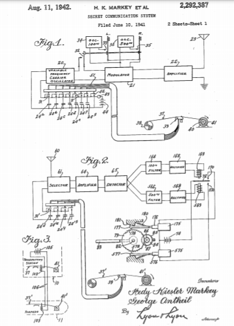

Descarga la patente original en esté enlace



Fue la única hija de un matrimonio de judíos secularizados. Su madre, una pianista nacida en Budapest, y su padre, un banquero nacido en Leópolis, pertenecían a familias judías burguesas. Desde pequeña destacó por su inteligencia y fue considerada por sus profesores como superdotada. Empezó sus estudios de ingeniería a los 16 años, pero tres años más tarde, en 1933, abandonó la ingeniería atraída por su vena artística y empezó a actuar en el teatro berlinés como alumna del director Max Reinhardt.
Así inició su carrera cinematográfica, y pronto sería mundialmente famosa por la secuencia de la película Éxtasis (1933), en la que aparece completamente desnuda, primero al borde de un lago y, luego, corriendo por la campiña checa. Por dicha escena se la conocería como la primera mujer en la historia del cine que apareció desnuda en una película comercial.
Atraído por esta película, el magnate de la industria armamentística Friedrich Mandl arregló con sus padres un casamiento de conveniencia y fue prometida en matrimonio en contra de su voluntad. Hedy calificó posteriormente esa época como de auténtica esclavitud.
Su marido Friedrich Alexander Maria Fritz Mandl (1900-1977), de familia católica por sus cuatro costados, (si bien tenía una hermana, Renata Renée Ferro, 1901-1985, fallecida en Buenos Aires, que se convirtió al judaísmo al casarse con un sefardita de Corfú, Federico Pace Shalom Ferro, 1885-1935, fallecido en Viena) era proveedor de municiones, de aviones de combate y de sistemas de control de Adolf Hitler y de Benito Mussolini (de quienes era amigo personal), según narra Lamarr en sus memorias.14 Esas ventas de material militar fueron realizadas durante la ocupación italiana de Abisinia (hoy Etiopía). Tras casarse el 10 de agosto de 1933, él intentó infructuosamente hacerse con todos los ejemplares existentes de la película en la que su esposa aparecía desnuda. Muy celoso, la obligaba a acompañarle en todas las cenas y viajes de negocios. Fue encerrada en casa y sometida a un estricto control. Hedy tuvo que abandonar su incipiente carrera cinematográfica, y cualquier otro tipo de actividad que no fuera la de simple comparsa de Mandl. Ella cuenta que tan solo podía bañarse o desnudarse cuando su marido estaba a su lado, acechándola.
Por otra parte, Hedy había aprovechado su soledad para continuar sus estudios de ingeniería, y utilizó su inteligencia para obtener de los clientes y proveedores de su marido los pormenores de la tecnología armamentística de la época que cedió a las autoridades de los Estados Unidos años más tarde; igualmente algunas reuniones le sirvieron de guía para idear y patentar, en los años 1940, la técnica de conmutación de frecuencias, que le devolvería notoriedad en los últimos años de su vida.
En 1937 Lamarr escapó al fin de Mandl. Durante su enclaustramiento mantuvo una relación sentimental con su asistenta que le sirvió para obtener la ayuda necesaria para escapar. En una rocambolesca historia de amor, Hedy consiguió la infraestructura necesaria para preparar un completo plan de fuga y escapar para siempre de las garras de su marido. Se deslizó por la ventana del baño de un restaurante y huyó en automóvil hasta París, Francia, seguida de cerca por los guardaespaldas de su marido.[cita requerida], aunque la versión que ella misma cuenta en su autobiografía es algo diferente: administró un somnífero a su asistenta y pudo salir de su casa disfrazada de ésta (la había contratado hacía poco justamente para este objetivo, por parecérsele físicamente). De esta manera pudo llegar a la estación de tren y viajar hasta París por este medio.
Un sistema de transmisión inalámbrica de espectro ensanchado por salto de frecuencia incluye un transmisor y un sistema receptor. El transmisor está configurado para transmitir señales de datos de radiofrecuencia en períodos de tiempo secuenciales en los respectivos canales de transmisión de acuerdo con una secuencia predeterminada. La señal de datos en cada período de tiempo incluye información que relaciona la señal de datos con su posición dentro de la secuencia predeterminada. El sistema receptor está configurado para monitorear una pluralidad de canales de recepción en un rango de frecuencia que incluye los canales de transmisión y para recibir las señales de datos en los canales de recepción.
Esta invención se relaciona ampliamente con comunicaciones secretas sistemas de comunicación que implican el uso de portadores ondas de diferentes frecuencias, y es especialmente útil en el control remoto de naves dirigibles, como torpedos. Un objeto de la invención es proporcionar un método de comunicación secreta. Que es relar operativamente simple y confiable, pero en el mismo tiempo es difícil de descubrir o descifrar. Brevemente, nuestro sistema adaptado para radio control de una nave remota, emplea un par de registros síncronos, uno en la estación transmisora y otro en la estación receptora, que cambian la sintonización del aparato transmisor y receptor de vez en cuando, de modo que sin conocimiento de los registros que un enemigo no podría disuadir nueve a qué frecuencia se enviaría un impulso controlador. Además, contemplamos el empleo de registros del tipo utilizado para muchos años en pianos, y que consisten en largos rollos de papel que tienen perforaciones colocadas de diversas formas en una pluralidad de filas longitudinales a lo largo de los discos. En una grabación de piano convencional donde puede haber 88 filas de perforaciones, y en nuestro sistema, tal registro permitiría uso de 88 frecuencias portadoras diferentes, desde uno a otro de los cuales tanto la estación transmisora como la receptora. Se cambiaría en intervalos. Además, los registros del tipo de el trazado se puede hacer de una longitud sustancial y puede conducirse lento o rápido. Esto hace posible un par de registros, uno en la transmisión.
Estación emisora y otra en la estación receptora, para ejecutar durante un período de tiempo suficiente para el control remoto control de un dispositivo como un torpedo. Los dos registros pueden sincronizarse mediante controladores con constante calibración y precisión motores de velocidad resorte, como los que se emplean para conducción de relojes y cronómetros. Sin embargo lo és también dentro del alcance de nuestra invención para corregir periódicamente la posición del registro en la estación receptora transmitiendo impulsos sincronos de la estación transmisora.
El uso de impulsos sincronizados para corregir la relación de fase del aparato rotatorio en un estación receptora es bien conocida y altamente de desarrollado en los campos de la telegrafía automática y televisión.
Otros objetos y características más específicos de nuestro invento aparecerá en el siguiente de descripción detallada de una realización particular del mismo, como se ilustra en los dibujos, en los que la figura 1 es un diagrama esquemático del aparato en una estación transmisora;
La figura 2 es un diagrama esquemático del aparato en una estación receptora.
La figura 3 es un diagrama esquemático que ilustra un circuito de arranque para arrancar los motores en al estacion transmisoras y receptoras simultáneamente;
La figura 4 es una vista en planta de una sección de una tira de grabación que puede emplearse. La figura 5 es una sección transversal detallada a través de un mecanismo de conmutación de respuesta ordinaria empleado en la invención; La figura 6 es una vista en sección en ángulo recto con la vista de la figura 5 y tomada sustancialmente en el plano WI-FI de la figura 5, pero mostrando el registro.
Una posición longitudinal diferente; y la figura 7 es un diagrama en planta que ilustra cómo se puede cambiar el curso de un torpedo en una concordancia con la invención.
Con referencia primero a la Fig.7, se describe un buque nodriza 10 que al inicio de las operaciones ocupa la posición Oa y al final de las operaciones ocupa la posición. Esta Otro barco descarga un torpedo que viaja sucesivamente por diferentes caminos 2, 3, 4, 5 y 6 para golpear un barco enemigo 7, que inicialmente ocupa la posición a pero que se ha movido en la posición b en el momento en que es golpeado por el torpedo si. Según su rumbo original, la nave enemiga 7 habría alcanzado la posición, pero cambió de rumbo tras el disparo del torpedo, en un intento de evadir el torpedo, de acuerdo con la presente invención, el torpedo puede ser dirigido desde la nave nodriza y su rumbo cambia de vez en cuando como necesario para hacer que golpee su objetivo. Al dirigir el torpedo puede, bajo algunas circunstancias, ser observado directamente desde la nave nodriza 0, o su rumbo puede ser seguido por un observador en un avión f8 que comunica sus hallazgos a la nave nodriza Oa. También es posible controlar el torpedo directamente desde el avión 8 si este último está equipado con el equipo de transmisión síncrono necesario de acuerdo con la invención.
Bajo las circunstancias particulares de la Figura 7, la nave enemiga 7 viajaba en línea recta sustancialmente paralela a la nave nodriza en el momento en que se descargó el torpedo, y el último se dirigió hacia adelante en un ángulo sustancial para compensar la velocidad del barco y las corrientes de agua representadas por el rumbo. Sin embargo, como consecuencia del cambio de rumbo del barco enemigo Ta y el efecto de las corrientes de agua, se observa que el torpedo, si continúa en su curso original, fallará al barco enemigo. De ahí que esté dirigido por control remoto para salir del camino 2 y seguir el camino 3. En momentos posteriores se observa que son necesarios más cambios, y su curso se cambia sucesivamente de la ruta 3 a la camino 4, al camino 5, y al camino, en para golpear el barco enemigo, el control remoto del torpedo como se describe es antiguo y, en general, no constituye una parte de nuestra invención. Sin embargo, ha sido muy dificulto en el pasado para emplear el control de radio de un torpedo, por la razón de que el enemigo podría descubra rápidamente la frecuencia de las señales de control y bloquee el control del torpedo enviando señales falsas de la frecuencia.
De acuerdo con nuestra invención, empleamos transmisores de radio de frecuencia variable y receptores para el mando a distancia y cambie el frecuencia a intervalos por registros síncronos en las dos estaciones.
Refiriéndose a la Fig.1, el aparato en la transcripción, la estación de encuentro incluye como elementos principales una oscilador portador de frecuencia variable, un modulador, un amplificador y una antena .
Estos elementos están representados esquemáticamente ya que su construcción exacta no constituye una parte de la presente invención. Basta decir que la portadora de frecuencia variable Osciladora está controlado para oscilar a diferentes frecuencias mediante una pluralidad de condensadores de sintonización, adaptados para ser conectado independientemente al oscilador por todos interruptores controlados automáticamente, uno para cada condensador. Los diferentes condensadores, inclusive, son de distintas capacidades, y estos las diferencias se indican en los dibujos mediante diferentes espacios entre las placas. Se proporcionan dos controles en el sistema de Fig. 1, en forma de dos teclas L y R, respectivamente. La tecla I se emplea para transmitir una señal para aplicar el timón izquierdo al torpedo distante, y la tecla R se emplea para aplicar el timón derecho, al torpedo. Accionamiento de la tecla se cierra contactos principales, que conectan la salida de el oscilador al modulador 2, y en el mismo tiempo cierra los contactos, que conectan un oscilador de 100 ciclos al modulador 2, que luego modula la onda portadora particular siendo generado en ese momento por el oscilador. La onda portadora modulada luego se amplifica en el amplificador 22 y se transmite desde el antena, 23.
Si el operador desea aplicar el timón derecho al torpedo distante, acciona la tecla R, que cierra los contactos principales 32 y también cierra contactos 35, que conectan una oscilla de 500 ciclos osilador 36 al modulador 2.
Los interruptores 3 se cierran selectivamente mediante un mecanismo controlado por registro accionado por una tira de registro 37, que se extrae de un rollo de suministro 38 sobre un cabezal de control 39 y terminó en una toma 40 impulsado por un reloj de velocidad constante motor 4.
Con referencia ahora a la figura 4, la tira de registro 3 tiene perforaciones dispuestas en ocho iones diferentes extendiéndose longitudinalmente las filas A, B, C, D, E, F, G y H, respectivamente. Perforaciones en las filas A, B, C, D, E, F y G controlan los siete interruptores 3 asociados con los diferentes condensadores de sintonizadores 24a a 24g, inclusive. Las perforaciones en la fila H controla un interruptor auxiliar 42 (figura 1), que enciende una lámpara de señal 43 de una batería 44.
La tira 3 se dibuja sobre el cabezal de control 9, como se mencionó anteriormente, y el cabezal de control responde a perforaciones en las diferentes filas A a H, inclusive, en la tira, para cerrar los interruptores 3 y el interruptor 42.
Una construcción típica que se puede utilizar en el cabezal de control 39 se muestra en las Figs. 5 y 6. Por tanto, puede comprender un bloque o zapata 45 sobre que se dibuja la tira de registro y que tiene una pluralidad de pasajes verticales 46, los orificios de que se yuxtaponen a las diferentes filas. Inclusive, de la tira. En la Fig.5 dos de los pasajes 46 se muestran yuxtapuestos ay en comunicación con aberturas en las dos filas C y G de la tira 37.
Cada uno de los pasajes 46 se comunica mediante un paso restringido 47 con un colector de succión 48, que está conectado por un tubo 49 a una succión bomba 50. Cada uno de los pasajes 46 también está conectado por un tubo 5 al extremo superior de un cilindro asociado 52 que contiene un pistón 53.
Cada pistón 53 se proyecta desde el extremo inferior de su cilindro 52 asociado y se superpone a un resorte 54 de uno de los interruptores de sintonización f. los resorte móvil 54 está separado por un bloque de, - sulación 55 del extremo inferior de su asociado pistón 53. Los pistones se mantienen normalmente en la posición superior en la que los hombros 56 sobre el mismo recostarse contra la cara inferior del bloque de cilindros 57 que contiene los cilindros 52, bajo el cual con posiciones los contactos 3 están abiertos. Sin embargo, un piston en ciertas condiciones que se describirán, los pistones 53 son empujados hacia abajo, mediante resortes de compresión 53a colocados en la parte superior, para llevar el muelles móviles 54 contra el con resortes táctiles 58 para cerrar los interruptores 3.
Los pistones 53 se mantienen en la posición más alta, en la que los interruptores 3 están abiertos, cuando una parte sólida de la tira de registro 3 se encuentra sobre los pasos 46, pero son presionados por el resortes 53a cuando las aberturas en la tira de registro pasar al registro con los pasajes 46. Así, siempre que el extremo superior de un pasaje 46 está cerrado por la tira de registro 3, se aplica succión desde el colector 48 a través del limitador, pasaje 7 al cilindro 52, y levanta el pistón 53 contra la fuerza del resorte 53a.
Sin embargo, cuando una perforación en la tira de registro coincide con un pasaje 46, el aire fluye libremente en el extremo superior del pasaje y en el pasaje restringido 47, rompiendo la succión aplicada al extremo superior del pistón 53 y permite que el resorte 5.3a mueva el pistón hacia abajo y cierre el asociado.
Será obvio que al posicionar así el perforaciones en las diferentes filas A, B, C, D, E, F y G, que perforaciones en diferentes filas se registran sucesivamente con sus pasajes asociados 46 (Fig.5), diferentes uno de los Interruptores 3 se cerrarán sucesivamente, para conectar diferentes de los condensadores de sintonización 24a a 24g (figura 1) inclusive, al Oscilador 20 y así cambiar la frecuencia de la onda portadora. Además, los cambios de frecuencia pueden ser puramente arbitrarios, sin ninguna repetición periódica que facilite la un enemigo para anticipar la frecuencia en cualquier instante en particular.
Refiriéndonos ahora a la Fig.2, el aparato en la estación receptora, (que puede estar en el torpedo de la Fig.1), comprende un receptor y antena S y un selector de señal 6 que se puede sintonizar en cualquiera de las cuatro frecuencias diferentes conectando al mismo condensadores diferentes 24'd, 24'e, 24 '?, y 24g. Cuando el condensador 24 está conectado al selector 6 y al condensador 24d está conectado al oscilador 20, el transmisor y el receptor están sintonizados al mismo frecuencia y SO Ohms.
Cuando se recibe una señal en la antena 60 de la misma frecuencia a la que está sintonizado el selector 6, la señal se amplifica en un amplificador 64 y se envía a un detector 65. Allí luego aparece en la salida del detector el onda de modulación que se imprimió en el portadora en la estación transmisora, y este la onda de modulación se aplica a la entrada de un par de filtros f66 y 566, el primero de los cuales está ajustado a 100 ciclos y el segundo a 500 ciclos. La salida del el filtro 66 se entrega a través un rectificador 68 a un imán 69, y la salida del filtro 56 S se entrega a través de un rectificador 568 a un imán 569.
Los imanes 69 y 566 actuar sobre una armadura común 2, que no es mal colocado en una posición neutra pero se mueve en respuesta a la activación del imán (69 a cerrar en un contacto 0 y se mueve en respuesta a la energización del imán 569 para cerrar en una contacto 50.
Si una señal recibida fue producida por actuación de la tecla L. (Fig.1) en la estación transmisora entonces se modula con una onda de 100 ciclos, y la onda de modulación pasará por el filtro 66 para energizar el imán 69 y cerrar la armadura 72 en el contacto 70, completando allí un circuito desde una batería 74 a través de un selenoide 75. El solenoide atrae su émbolo 76, provocando que un trinquete 77, conectado al émbolo, sea encajado en dientes de trinquete 78 en una rueda de timón 79 y hacer avanzar la rueda en sentido horario por la longitud de uno de los dientes de trinquete. Un resorte 80 normalmente mantiene el trinquete 7 alejado de los dientes 78, y una cara de leva fija f8 guía el trinquete para que encaje con los dientes del trinquete tal como está moviendo por el émbolo T6.
La rueda del timón 79 está asegurada a un timón puesto 82 que lleva un timón 83, de modo que el timón se mueve una distancia predeterminada hacia el izquierdo en respuesta a una sola pulsación de la tecla L, en la estación transmisora. La clave debe ser cerrado sólo momentáneamente, y tan pronto como sea liberado el imán 69 y el solenoide 75 se liberan, después de lo cual el trinquete 7 y el émbolo 76 se retraen a la posición neutra por el primero 80.
Si la tecla R en la estación transmisora está activada, la onda portadora se modula con la onda moduladora de 500 ciclos, que pasa por el filtro 566 en la estación receptora, para energizar el imán 569. Esto cierra el armadura 72 en el contacto 570, para energizar un solenoide 575, idéntico al solenoide 75, y accionar un trinquete 577 que encaja con los dientes de trinquete 578.
Estos últimos están dirigidos de manera opuesta con respecto a los dientes de trinquete 78, de modo que el trinquete 577 y los dientes 578 funcionan para cambiar el timón 83 a la derecha, en lugar de a la izquierda. Se deben proporcionar algunos medios para retener timón 83 en cualquier posición que se haya movido por el trinquete 77 o 577, y hemos mostrado un tambor de freno 84 aplicado por fricción por un freno banda 85 y conectado por un piñón 86 y un segmento de engranaje 87 a la rueda del timón 79.
La banda 85 ofrece suficiente resistencia a la fricción para movimiento del timón para retenerlo en la posición a la que se ha movido, pero insuficiente para evitar el movimiento del timón por los trinquetes y 57. Los condensadores de sintonización 24'd a 24'g, inclusive, en la estación receptora están adaptados para ser con conectado uno a la vez al selector 6, para sintonizarlo a diferentes frecuencias, mediante contactos 3f similares a los contactos 3 en la estación transmisora, y accionado de la misma manera bajo el control de una tira de grabación de 37 ", que puede ser idéntica a la tira de grabación 37 en la estación transmisora, y se coloca sobre un cabezal de control de 39 ”mediante un reloj motor 4i 'que funciona a la misma velocidad que el motor 4 en la estación transmisora. El de las colas del cabezal de control 39 'y los interruptores 3 ", por lo que estos últimos se cierran en respuesta a perforaciones colocadas de manera diferente en el registro tira 37, son los mismos que los de la transmisión estación de ting, que se describieron con referencia a las Figs. 5 y 6.
Por supuesto, es necesario que las tiras de registro 37 y 3 'en la estación de transmisión y recepciciones, respectivamente, se inician al mismo tiempo y en una relación de fase adecuada entre sí, así que las perforaciones correspondientes en los dos registros las tiras se moverán sobre su control asociado cabezas al mismo tiempo. Por lo tanto proporcionamos un aparato para sujetar ambas tiras de registro en un posición inicial hasta que se dispare el torpedo, y para luego soltar simultáneamente ambas tiras SO que pueden ser movidos a la misma velocidad por sus motores asociados 4 y 4.
El mecanismo de sujeción en cada estación en incluye un pasador 00 (Fig.6) montado de forma deslizante para movimiento vertical en la cabeza 45 y adaptado a enganchar un orificio de inicio especial O (Fig.4) en su tira de registro asociada. El pasador 00 normalmente se empuja a una posición más baja mediante un resorte de compresión fo2, como se muestra en la Fig.5, de modo que quede claro de la tira de registro y no impide su movimiento. Sin embargo, el pasador está adaptado para mantenerse en posición superior en acoplamiento con el orificio Of en la tira de registro, mediante un solenoide 03 que tiene un émbolo 04 que está conectado al pin 00.
El solenoide se muestra energizado en la Fig.6. Refiriéndonos ahora a la Fig.3, cuando un torpedo equipado con el aparato descrito en la Fig.2 está preparado para disparar desde la nave nodriza, en la que el aparato de transmisión de la Fig.1 es montados, tanto el solenoide 03 en el torpedo como el solenoide 03 en el equipo transmisor, están conectados en serie con una batería 05 por un circuito que incluye conductores 06 que se extienden entre el torpedo y la estación transmisora en la nave nodriza, manteniendo así tanto las tiras de registro en la posición inicial.
Cuando el cual se dispara el torpedo, los conductores 06 se rompen, interrumpiendo así la serie de circuitos de energía. Se notará que mientras que hay siete condensadores de sintonización 24 en la estación transmisora, sólo hay cuatro condensadores de sintonización 24 'en el estación receptora. El extra de tres tuning con densificadores en la estación transmisora proporcionan tres canales adicionales para el transmisor para el que no hay canales correspondientes en el receptor, lo que permite el envío de falsos impulsos de confundir al enemigo. En el sistema particular que se muestra, el aparato receptor es eficaz para recibir en los canales D, E, F y G, pero es ineficaz para recibir en los canales A, B y C. Si el operador en el la estación transmisora envió una señal mientras el sistema operativo oscilador estaba operando en uno de los canales A, B o C, la señal no se recibiría en el torpedo. Por lo tanto, es deseable proporcionar un indicador para asesorar al operador en la transmisión cuando las estaciones transmisora y receptora están sintonizadas en la misma frecuencia. La lámpara 43, accionada por el interruptor auxiliar 42 (figura 1) constituye tal indicador. El interruptor 42 se cierra para encender la lámpara: 43 siempre que una abertura en la fila H. (Fig. 4) de la tira de grabación se mueva sobre su pasaje asociado 46 en el cabezal de control 39. Las perforaciones en fila. H de la tira de registro están dispuestos de manera que enciendan la lámpara, 43 siempre que el operador no deba enviar una señal de control. Para ello, se producen las perforaciones en la fila H en la tira de registro.
Al principio y al final de cada perforación en las filas D, E, F y G, y se extienden entre perforaciones sucesivas, espaciadas, en estas filas (en cuyo momento las perforaciones ocurren en una o más de las filas; A, B y C, que transmiten falso señales).
El mecanismo dispuesto como se describe, funciona para encender la lámpara 43 por un corto tiempo durante cada transición de uno a otro de los canales útiles D, E, F y G, para advertir al operador que no transmita un impulso de control en el momento. de transición de una frecuencia a otra. La lámpara: 43 permanece encendida durante los períodos en que el transmisor está sintonizado para transmitir en cualquier uno de los canales A, B o C. El operador, por supuesto, ocasionalmente transmitirá impulsos, por supuesto, ocasionalmente transmitirá impulsos mientras el transmisor está sintonizado en uno de los canales A, B o C, para engañar al enemigo, pero lo sabrá, por el hecho de que la lámpara 43 está iluminado, estos impulsos no afectarán al torpedo.
Se entenderá que se pueden realizar muchas variaciones de la construcción mostrada sin apartarse de la invención. Por tanto, para simplificar los dibujos, se ha ilustrado una tira de registro que tiene sólo ocho filas de perforaciones. Sin embargo, como se mencionó anteriormente, las tiras de grabación similares empleadas en los pianos tener hasta 88 filas de perforaciones, y se podría emplear un número similar en el sistema actual para proporcionar una gran cantidad de canales, a los que tanto el transmisor como el se pueden sintonizar estaciones receptoras y también una gran cantidad de canales auxiliares en el transmisor para enviar señales falsas. Si lo desea, las perforaciones correspondientes a las señales falsas, pueden omitirse del registro tira en el receptor. Sin embargo, esto no es necesario, la tira de registro en la transmisión y las estaciones receptoras pueden ser idénticas en todos los aspectos espectros, y cualquier número de filas de perforaciones en la tira de registro en la estación receptora puede resultar ineficaz bloqueando los pasajes 46 en el cabezal de recepción que corresponden al canales falsos. También será obvio que el los cabezales de control 39 y 39 'en las estaciones transmisora y receptora, respectivamente, pueden identificarse, pero los resortes de contacto 54 y 58 (Fig.6) en el receptor se pueden dejar desconectados en esos canales en los que se transmiten señales falsas.
Una característica muy importante de nuestro sistema es que sólo es necesario transmitir relativamente pocas señales y relativamente cortas. Por tanto, sólo es necesario cerrar una de las teclas L. o R momentáneamente para desviar el timón 83 en un incremento en dirección. La transmisión de un muy corto en el pulso no puede ser descubierto por el enemigo en todos. Incluso si el enemigo tomara uno de los impulsos transmitidos, no sabría si era una señal eficaz o una señal falsa. Además, es muy posible alcance los registros que el receptor nunca se sintoniza dos veces en la misma frecuencia. Aunque la invención se ha explicado: describiendo en detalle su aplicación al icono control de un torpedo u otra nave cuando sea necesario. Si desea conducir en una sola dimensión, será obvio para los expertos en la técnica que al usar un gran numero de frecuencias de modulación, se pueden realizar funciones adicionales. Por lo tanto, al usar cuatro ondas de modulación con frecuencias de Digamos 100 ciclos, 500 ciclos, 1000 ciclos y 2000 ciclos, respectivamente, y usar filtros apropiados en la estación receptora, es obvio que se pueden controlar dos timones. Esto sería deseable al controlar torpedos aéreos u otros tipos de embarcaciones en las que se controle en dirección vertical, así como en dirección horizontal.
No existe un límite particular al número de canales de control que se pueden utilizado con nuestra invención. También debe entenderse que otros métodos incluyendo modulación de frecuencia o modulación de fase, se pueden emplear en nuestro sistema. La expresión "onda portadora", como se usa en las reivindicaciones, tiene la intención de definir la forma no modulada cuando se emplea modulación de fase o frecuencia. Varias otras desviaciones del sistema exacto descrito serán evidentes para los expertos en la técnica y, por lo tanto, la invención debe limitarse solo como se establece en las reivindicaciones adjuntas.